स्कन्ध 7 · अध्याय 1
श्लोक १
राजोवाच–
समः प्रियः सुहृद् ब्रह्मन् भूतानां भगवान् स्वयम् ।
इन्द्रस्यार्थे कथं दैत्यानवधीद्विषमो यथा।। १ ।।
समः प्रियः सुहृद् ब्रह्मन् भूतानां भगवान् स्वयम् ।
इन्द्रस्यार्थे कथं दैत्यानवधीद्विषमो यथा।। १ ।।
श्लोक २
न ह्यस्यार्थः सुरगणैः साक्षान्निःश्रेयसात्मनः ।
नैवासुरेभ्यो विद्वेषो नोद्वेगश्चागुणस्य हि।। २ ।।
नैवासुरेभ्यो विद्वेषो नोद्वेगश्चागुणस्य हि।। २ ।।
श्लोक ३
इति नः सुमहाभाग नारायणगुणान् प्रति ।
संशयः सुमहान् जातस्तद्भवान् छेत्तुमर्हति।। ३ ।।
संशयः सुमहान् जातस्तद्भवान् छेत्तुमर्हति।। ३ ।।
श्लोक ४
श्रीशुक उवाच–
साधु पृष्टं महाराज हरेश्चरितमद्भुतम् ।
यद् भागवतमाहात्म्यं भगवद्भक्तिवर्धनम्।। ४ ।।
साधु पृष्टं महाराज हरेश्चरितमद्भुतम् ।
यद् भागवतमाहात्म्यं भगवद्भक्तिवर्धनम्।। ४ ।।
श्लोक ५
गीयते परमं पुण्यं ऋषिभिर्नारदादिभिः ।
नत्वा कृष्णाय मुनये कथयिष्ये हरेः कथाम्।। ५ ।।
नत्वा कृष्णाय मुनये कथयिष्ये हरेः कथाम्।। ५ ।।
श्लोक ६
निर्गुणोऽपि ह्यजोऽव्यक्तो भगवान् प्रकृतेः परः ।
स्वमायागुणमाविश्य बाध्यबाधकतां गतः।। ६ ।।
स्वमायागुणमाविश्य बाध्यबाधकतां गतः।। ६ ।।
भागवततात्पर्यनिर्णय
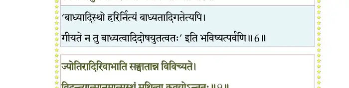
श्लोक ७
सत्वं रजस्तम इति प्रकृतेर्नात्मनो गुणाः ।
न तेषां युगपद् राजन् ह्रास उन्नाह एव च।। ७ ।।
न तेषां युगपद् राजन् ह्रास उन्नाह एव च।। ७ ।।
श्लोक ८
जयकाले तु सत्वस्य देवर्षीन् रजसोऽसुरान् ।
तमसो यक्षरक्षांसि तत्कालानुगुणो भजन्।। ८ ।।
तमसो यक्षरक्षांसि तत्कालानुगुणो भजन्।। ८ ।।
श्लोक ९
ज्योतिरादिरिवाभाति सङ्घातान्न विविच्यते ।
विन्दन्त्यात्मानमात्मस्थं मथित्वा कवयोऽन्ततः।। ९ ।।
विन्दन्त्यात्मानमात्मस्थं मथित्वा कवयोऽन्ततः।। ९ ।।
भागवततात्पर्यनिर्णय
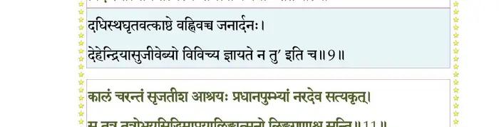
श्लोक १०
यदा सिसृक्षुः पुर आत्मनः परो रजः सृजत्येष पृथक् स्वमायया ।
सत्वं विचित्रासु रिरंसुरीश्वरः शयिष्यमाणस्तम ईरयत्यसौ।। १० ।।
सत्वं विचित्रासु रिरंसुरीश्वरः शयिष्यमाणस्तम ईरयत्यसौ।। १० ।।
श्लोक ११
कालं चरन्तं सृजतीश आश्रयः प्रधानपुंभ्यां नरदेव सत्यकृत् ।
स तत्र तत्रोभयसिद्धिमाप्नुयात् लिङ्गात्मनो लिङ्गगुणाश्च सन्ति।।११।।
स तत्र तत्रोभयसिद्धिमाप्नुयात् लिङ्गात्मनो लिङ्गगुणाश्च सन्ति।।११।।
भागवततात्पर्यनिर्णय
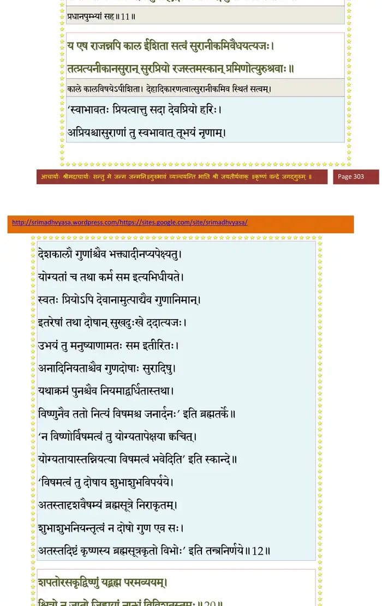
श्लोक १२
य एष राजन्नपि काल ईशिता सत्वं सुरानीकमिवैधयत्यजः ।
तत्प्रत्यनीकानसुरान् सुरप्रियो रजस्तमस्कान् प्रमिणोत्युरुश्रवाः ।। १२ ।।
तत्प्रत्यनीकानसुरान् सुरप्रियो रजस्तमस्कान् प्रमिणोत्युरुश्रवाः ।। १२ ।।
श्लोक १३
स वा पुनः स्वसृष्टस्य स्थितिरक्षानुवृत्तये ।
सत्वं सुरगणान् विष्णुरुपबृंहयते मुहुः।। १३ ।।
सत्वं सुरगणान् विष्णुरुपबृंहयते मुहुः।। १३ ।।
श्लोक १४
अत्रैवोदाहृतः पूर्वमितिहासः सुरर्षिणा ।
प्रीत्या महाक्रतौ राजन् पृच्छतेऽजातशत्रवे।। १४ ।।
प्रीत्या महाक्रतौ राजन् पृच्छतेऽजातशत्रवे।। १४ ।।
श्लोक १५
दृष्ट्वा महाद्भुतं राजा राजसूये महाक्रतौ ।
वासुदेवे भगवति सायुज्यं चेदिभूभुजः।। १५ ।।
वासुदेवे भगवति सायुज्यं चेदिभूभुजः।। १५ ।।
श्लोक १६
तत्रासीनं सुरऋषिं राजा पाण्डुसुतः क्रतौ ।
पप्रच्छ विस्मितमना मुनीनां शृृण्वतामिदम्।। १६ ।।
पप्रच्छ विस्मितमना मुनीनां शृृण्वतामिदम्।। १६ ।।
श्लोक १७
युधिष्ठिर उवाच–
अहो ह्यत्यद्भुतं ह्येतद् दुर्लभैकान्तिनामपि ।
वासुदेवे परे तत्वे प्राप्तिश्चैद्यस्य विद्विषः।। १७ ।।
अहो ह्यत्यद्भुतं ह्येतद् दुर्लभैकान्तिनामपि ।
वासुदेवे परे तत्वे प्राप्तिश्चैद्यस्य विद्विषः।। १७ ।।
श्लोक १८
एतद् वेदितुमिच्छामः सर्व एव वयं मुने ।
भगवन्निन्दया वेनो द्विजैस्तमसि पातितः।। १८ ।।
भगवन्निन्दया वेनो द्विजैस्तमसि पातितः।। १८ ।।
श्लोक १९
दमघोषसुतः पाप आरभ्य कलभाषणात् ।
सम्प्रत्यमर्षी गोविन्दे दन्तवक्रश्च दुर्मतिः।। १९ ।।
सम्प्रत्यमर्षी गोविन्दे दन्तवक्रश्च दुर्मतिः।। १९ ।।
श्लोक २०
शपतोरसकृद् विष्णुं यद् ब्रह्म परमव्ययम् ।
श्वित्रो न जातो जिह्वायां नान्धं विविशतुस्तमः।। २० ।।
श्वित्रो न जातो जिह्वायां नान्धं विविशतुस्तमः।। २० ।।
भागवततात्पर्यनिर्णय
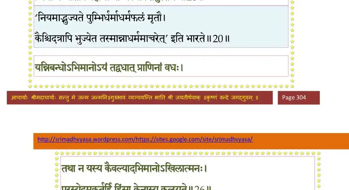
श्लोक २१
कथं तस्मिन् भगवति दुरवग्राह्यधामनि ।
पश्यतां सर्वलोकानां लयमीयतुरञ्जसा।। २१ ।।
पश्यतां सर्वलोकानां लयमीयतुरञ्जसा।। २१ ।।
श्लोक २२
एतद् भ्राम्यति मे बुद्धिर्दीपार्चिरिव वायुना ।
ब्रूह्येतदद्भुततमं भगवन्नत्र कारणम्।। २२ ।।
ब्रूह्येतदद्भुततमं भगवन्नत्र कारणम्।। २२ ।।
श्लोक २३
श्रीशुक उवाच–
राज्ञस्तद्वच आकर्ण्य नारदो भगवान् ऋषिः ।
तुष्टः प्राह तमाभाष्य शृण्वन्त्याः सदसः कथाः।। २३ ।।
राज्ञस्तद्वच आकर्ण्य नारदो भगवान् ऋषिः ।
तुष्टः प्राह तमाभाष्य शृण्वन्त्याः सदसः कथाः।। २३ ।।
श्लोक २४
नारद उवाच–
निन्दनस्तवसत्कारन्यक्कारार्थं कलेवरम् ।
प्रधानपरयो राजन् अविवेकेन कल्पितम्।। २४ ।।
निन्दनस्तवसत्कारन्यक्कारार्थं कलेवरम् ।
प्रधानपरयो राजन् अविवेकेन कल्पितम्।। २४ ।।
श्लोक २५
हिंसा तदभिमानेन दण्डपारुष्ययोर्यथा ।
वैषम्यमिह भूतानां ममाहमिति पार्थिव।। २५ ।।
वैषम्यमिह भूतानां ममाहमिति पार्थिव।। २५ ।।
श्लोक २६
यन्निबन्धोऽभिमानोऽयं तद्वधात् प्राणिनां वधः ।
तथा न यस्य कैवल्यादभिमानोऽखिलात्मनः ।
परस्येदमकर्तुहि हिंसा केनास्य कल्प्यते।। २६ ।।
तथा न यस्य कैवल्यादभिमानोऽखिलात्मनः ।
परस्येदमकर्तुहि हिंसा केनास्य कल्प्यते।। २६ ।।
भागवततात्पर्यनिर्णय
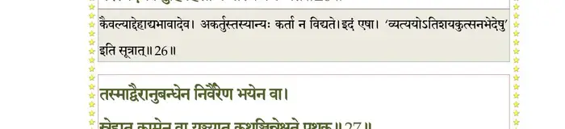
श्लोक २७
तस्माद् वैरानुबन्धेन निर्वैरेण भयेन वा ।
स्नेहात् कामेन वा युञ्ज्यात् कथञ्चिन्नेक्षते पृथक्।। २७ ।।
स्नेहात् कामेन वा युञ्ज्यात् कथञ्चिन्नेक्षते पृथक्।। २७ ।।
भागवततात्पर्यनिर्णय
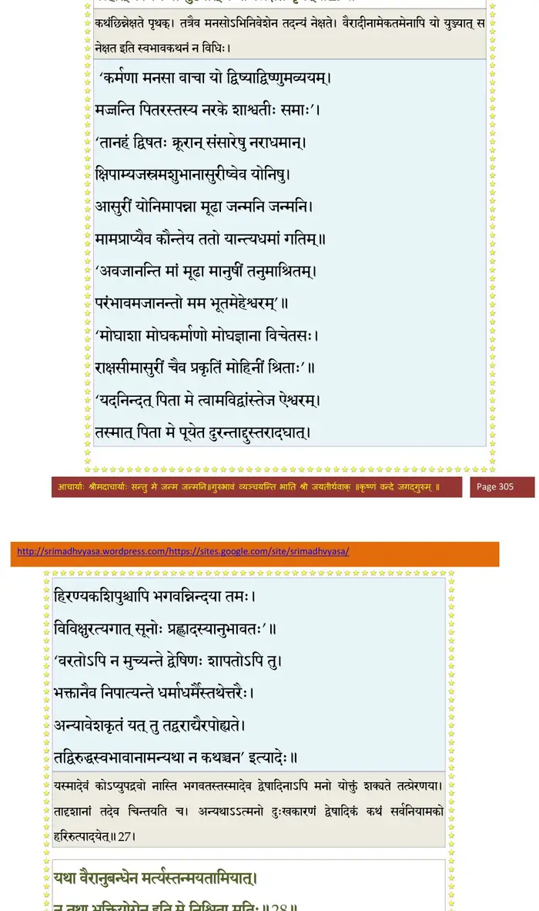
श्लोक २८
यथा वैरानुबन्धेन मर्त्यस्तन्मयतामियात् ।
न तथा भक्तियोगेन इति मे निश्चिता मतिः।। २८ ।।
न तथा भक्तियोगेन इति मे निश्चिता मतिः।। २८ ।।
भागवततात्पर्यनिर्णय
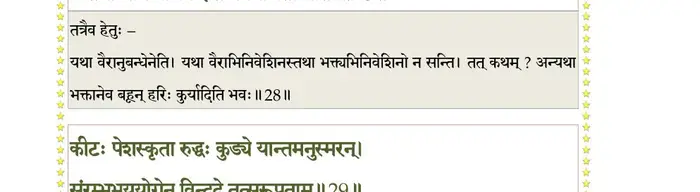
श्लोक २९
कीटः पेशस्कृता रुद्धः कुड्ये यान्तमनुस्मरन् ।
संरम्भभययोगेन विन्दते तत्सरूपताम्।। २९ ।।
संरम्भभययोगेन विन्दते तत्सरूपताम्।। २९ ।।
भागवततात्पर्यनिर्णय
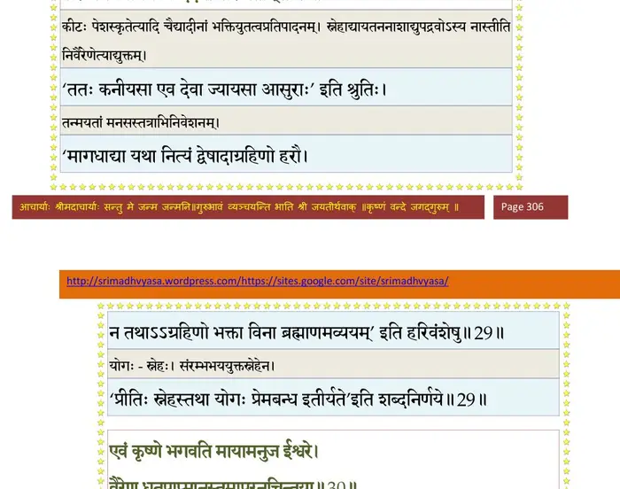
श्लोक ३०
एवं कृष्णे भगवति मायामनुज ईश्वरे ।
वैरेण धूतपाप्मानः तमापुरनुचिन्तया।। ३० ।।
वैरेण धूतपाप्मानः तमापुरनुचिन्तया।। ३० ।।
भागवततात्पर्यनिर्णय
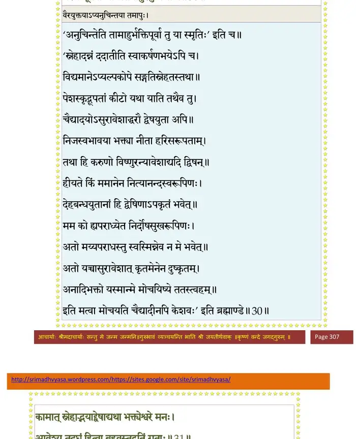
श्लोक ३१
कामात् स्नेहाद् भयाद् द्वेषाद् यथा भक्त्येश्वरे मनः ।
आवेश्य तदघं हित्वा बहवस्तद्गतिं गताः।। ३१ ।।
आवेश्य तदघं हित्वा बहवस्तद्गतिं गताः।। ३१ ।।
भागवततात्पर्यनिर्णय
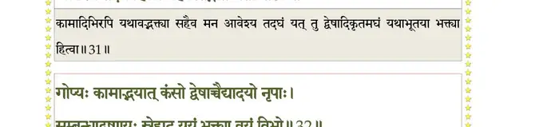
श्लोक ३२
गोप्यः कामाद् भयात् कंसो द्वेषाच्चैद्यादयो नृपाः ।
सम्बन्धाद् वृष्णयः स्नेहाद् यूयं भक्त्या वयं विभो।। ३२ ।।
सम्बन्धाद् वृष्णयः स्नेहाद् यूयं भक्त्या वयं विभो।। ३२ ।।
भागवततात्पर्यनिर्णय
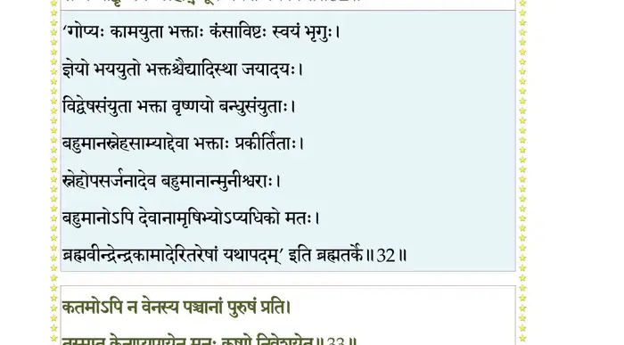
श्लोक ३३
कतमोऽपि न वेनस्य पञ्चानां पुरुषं प्रति ।
तस्मात् केनाप्युपायेन मनः कृष्णे निवेशयेत्।। ३३ ।।
तस्मात् केनाप्युपायेन मनः कृष्णे निवेशयेत्।। ३३ ।।
भागवततात्पर्यनिर्णय
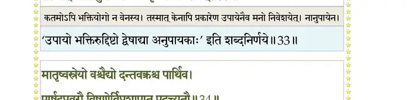
श्लोक ३४
मातृष्वस्रेयो वश्चैद्यो दन्तवक्रश्च पार्थिव ।
पार्षदप्रवरौ विष्णोर्विप्रशापात् पदच्युतौ।। ३४ ।।
पार्षदप्रवरौ विष्णोर्विप्रशापात् पदच्युतौ।। ३४ ।।
भागवततात्पर्यनिर्णय
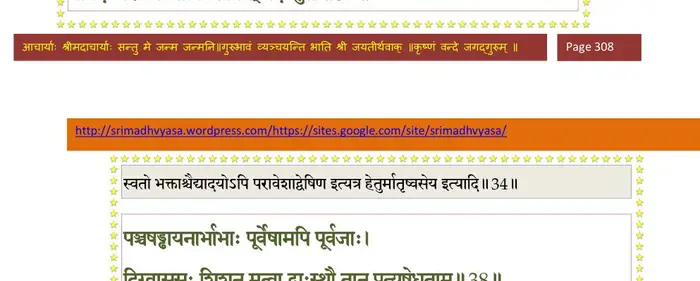
श्लोक ३५
युधिष्ठिर उवाच–
कीदृशः कस्य वा शापो हरिदासाभिमर्शनः ।
अश्रद्धेय इवाभाति हरेरेकान्तिनां भवः।। ३५ ।।
कीदृशः कस्य वा शापो हरिदासाभिमर्शनः ।
अश्रद्धेय इवाभाति हरेरेकान्तिनां भवः।। ३५ ।।
श्लोक ३६
देहेन्द्रियासुहीनानां वैकुण्ठपुरवासिनाम् ।
देहसंबन्धसंबन्धमेतदाख्यातुमर्हसि।। ३६ ।।
देहसंबन्धसंबन्धमेतदाख्यातुमर्हसि।। ३६ ।।
श्लोक ३७
नारद उवाच–
एकदा ब्रह्मणः पुत्रा विष्णोर्लोकं यदृच्छया ।
सनन्दनादयो जग्मुश्चरन्तो भुवनत्रयम्।। ३७ ।।
एकदा ब्रह्मणः पुत्रा विष्णोर्लोकं यदृच्छया ।
सनन्दनादयो जग्मुश्चरन्तो भुवनत्रयम्।। ३७ ।।
श्लोक ३८
पञ्चषड्ढायनार्भाभाः पूर्वेषामपि पूर्वजाः ।
दिग्वाससः शिशून् मत्वा द्वास्थौ तान् प्रत्यषेधताम्।। ३८ ।।
दिग्वाससः शिशून् मत्वा द्वास्थौ तान् प्रत्यषेधताम्।। ३८ ।।
भागवततात्पर्यनिर्णय
श्लोक ३९
अशपन् कुपिता एवं युवां वासं न चार्हथः ।
रजस्तमोभ्यां रहिते पादमूले मधुद्विषः।। ३९ ।।
रजस्तमोभ्यां रहिते पादमूले मधुद्विषः।। ३९ ।।
भागवततात्पर्यनिर्णय
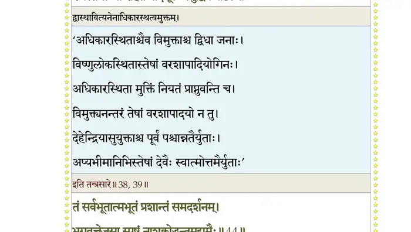
श्लोक ४०
पापिष्ठामासुरीं योनिं बालिशौ यातमाश्वतः ।
एवं शप्तौ स्वभवनात् पतन्तौ तैः कृपालुभिः।। ४० ।।
एवं शप्तौ स्वभवनात् पतन्तौ तैः कृपालुभिः।। ४० ।।
श्लोक ४१
प्रोक्तौ पुनर्जन्मभिर्वां त्रिभिर्लोकाय कल्पताम् ।
जज्ञाते तौ दितेः पुत्रौ दैत्यदानववन्दितौ ।
हिरण्यकशिपुर्ज्येष्ठो हिरण्याक्षोऽनुजस्ततः।। ४१ ।।
जज्ञाते तौ दितेः पुत्रौ दैत्यदानववन्दितौ ।
हिरण्यकशिपुर्ज्येष्ठो हिरण्याक्षोऽनुजस्ततः।। ४१ ।।
श्लोक ४२
हतो हिरण्यकशिपुर्हरिणा सिंहरूपिणा ।
हिरण्याक्षो धरोद्धारे बिभ्रता सौकरं वपुः।। ४२ ।।
हिरण्याक्षो धरोद्धारे बिभ्रता सौकरं वपुः।। ४२ ।।
श्लोक ४३
हिरण्यकशिपुः पुत्रं प्रह्लादं भगवत्प्रियम् ।
जिघांसुरकरोन्नाना यातना मृत्युहेतवे।। ४३ ।।
जिघांसुरकरोन्नाना यातना मृत्युहेतवे।। ४३ ।।
श्लोक ४४
तं सर्वभूतात्मभूतं प्रशान्तं समदर्शनम् ।
भगवत्तेजसा स्पृष्टं नाशक्नोद्धन्तुमुद्यमैः।। ४४ ।।
भगवत्तेजसा स्पृष्टं नाशक्नोद्धन्तुमुद्यमैः।। ४४ ।।
भागवततात्पर्यनिर्णय
श्लोक ४५
ततस्तौ राक्षसौ जातौ केशिन्यां विश्रवःसुतौ ।
रावणः कुम्भकर्णश्च सर्वलोकप्रतापिनौ।। ४५ ।।
रावणः कुम्भकर्णश्च सर्वलोकप्रतापिनौ।। ४५ ।।
भागवततात्पर्यनिर्णय
श्लोक ४६
तत्रापि राघवो भूत्वा न्यहनच्छापमुक्तये ।
रामवीर्यं श्रोष्यसि त्वं मार्कण्डेयमुखात् प्रभो।। ४६ ।।
रामवीर्यं श्रोष्यसि त्वं मार्कण्डेयमुखात् प्रभो।। ४६ ।।
भागवततात्पर्यनिर्णय
श्लोक ४७
तावद्य क्षत्रियौ जातौ मातृष्वस्रात्मजौ तव ।
अधुना शापनिर्मुक्तौ कृष्णचक्रहतांहसौ।। ४७ ।।
अधुना शापनिर्मुक्तौ कृष्णचक्रहतांहसौ।। ४७ ।।
भागवततात्पर्यनिर्णय
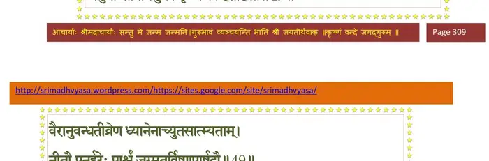
श्लोक ४८
वैरानुबन्धतीव्रेण ध्यानेनाच्युतसाम्यताम् ।
नीतौ पुनर्हरेः पार्श्वं जग्मतुर्विष्णुपार्षदौ।। ४८ ।।
नीतौ पुनर्हरेः पार्श्वं जग्मतुर्विष्णुपार्षदौ।। ४८ ।।
भागवततात्पर्यनिर्णय
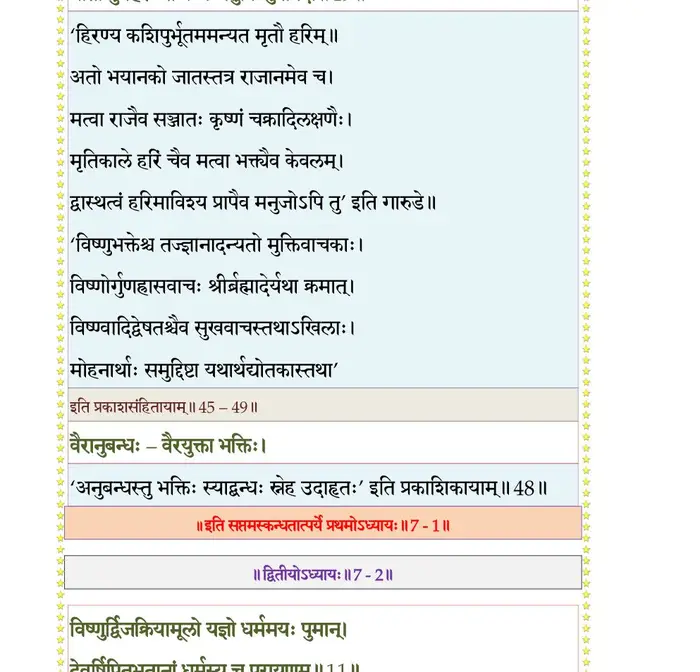
श्लोक ४९
युधिष्ठिर उवाच–
विद्वेषो दयिते पुत्रे कथमासीन्महात्मनि ।
ब्रूहि मे भगवन् येन प्रह्लादेऽप्यच्युतात्मनि।। ४९ ।।
विद्वेषो दयिते पुत्रे कथमासीन्महात्मनि ।
ब्रूहि मे भगवन् येन प्रह्लादेऽप्यच्युतात्मनि।। ४९ ।।
।। इति श्रीमद्भागवते सप्तमस्कन्धे प्रथमोऽध्यायः ।।